Guia prático em PDF · para quem mora em apartamento
Sua horta de temperos na varanda, do zero à primeira colheita em 30 dias
Mesmo sem quintal, sem experiência e sem "mão boa" para planta. Um guia passo a passo que mostra o que plantar no seu espaço, como cuidar e o que fazer a cada dia.
- 15 plantas fáceis, cada uma com sua ficha completa
- Plano de 30 dias com uma tarefa curta por dia
- Calendário de plantio para cada região do Brasil
Pagamento seguro pela Kiwify · Acesso imediato por e-mail
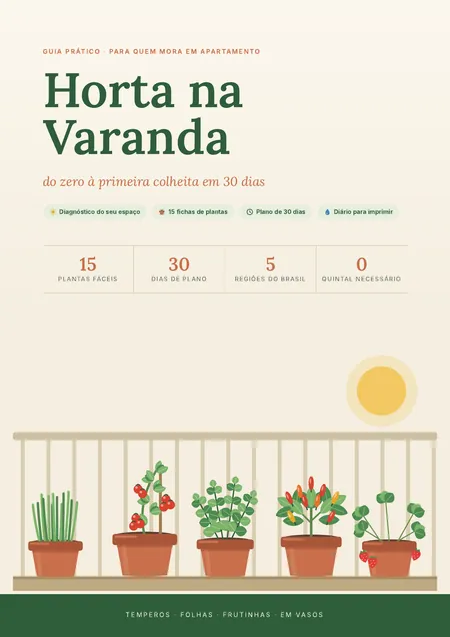
Já comprou um vasinho de manjericão que morreu em duas semanas?
Você não está sozinha(o). A maioria das hortas de apartamento não morre por falta de vontade. Morre por três motivos simples, que ninguém explica quando a gente compra a muda:
-
Planta errada para o seu sol.
Cada planta precisa de uma quantidade de luz. Colocar a planta certa no lugar errado é a causa número um de fracasso.
-
Vaso pequeno demais.
Raiz apertada não cresce, seca rápido e a planta definha.
-
Água de mais (ou de menos).
Mais plantas morrem afogadas do que de sede, e quase ninguém sabe a hora certa de regar.
O Horta na Varanda resolve os três antes de você plantar a primeira semente.
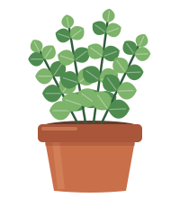
Um guia que pega você pela mão, do diagnóstico à colheita
São 40 páginas ilustradas, feitas para ler no celular ou imprimir. Você descobre quanto sol o seu espaço recebe, escolhe as plantas certas para ele, monta os vasos do jeito certo e segue um plano de 30 dias, com uma tarefa curta por dia. Com mudas de temperos e duas plantas de ciclo rápido, a primeira colheita acontece dentro do primeiro mês.
O que você vai encontrar
-
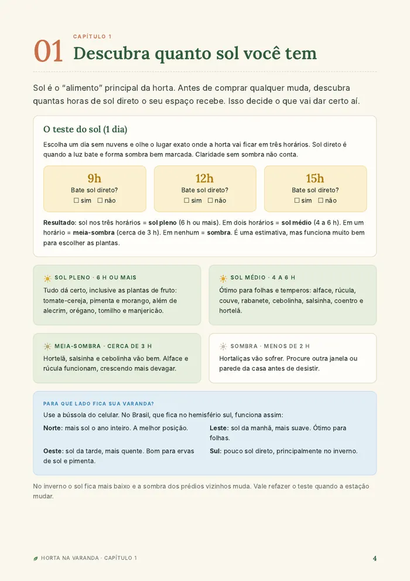
1Descubra quanto sol você tem: o teste do sol, feito em um dia, que define tudo o que vem depois. -
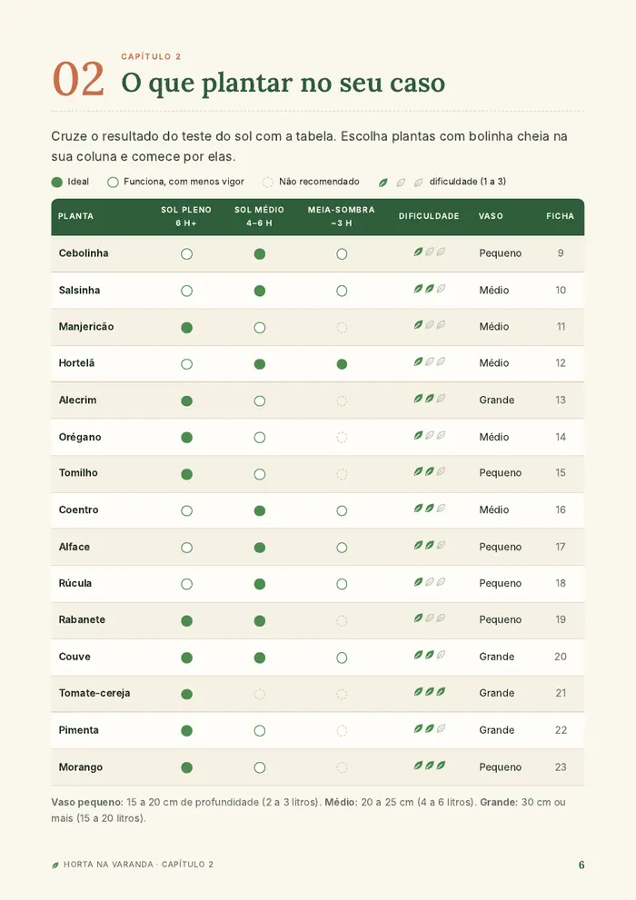
2O que plantar no seu caso: a tabela Sol × Plantas e combinações prontas para começar. -
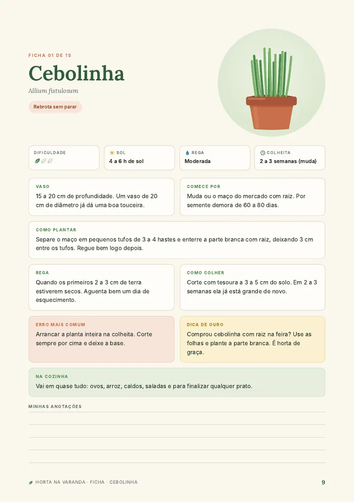
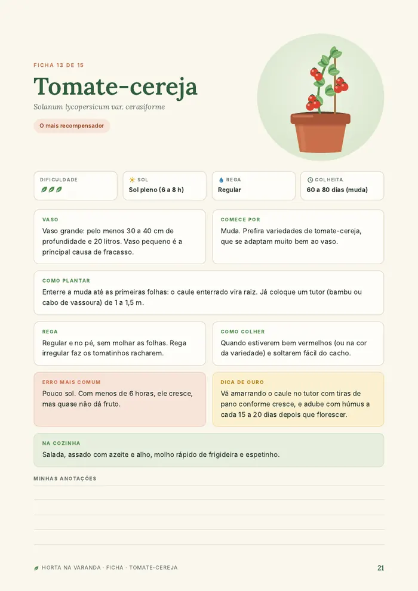
315 fichas de plantas: vaso, como plantar, rega, colheita, o erro mais comum e uma dica de ouro para cada uma. -
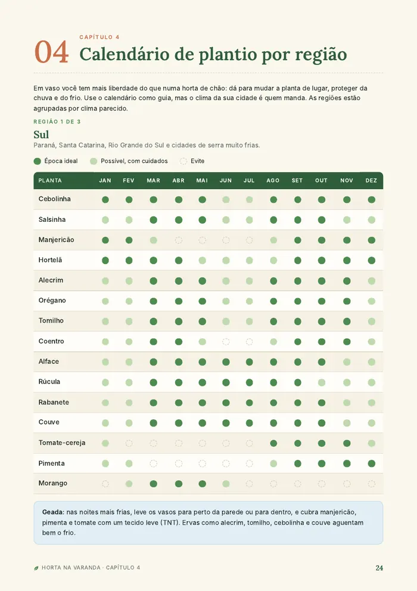
4Calendário por região: quando plantar no Sul, no Sudeste, no Centro-Oeste, no Norte e no Nordeste. -
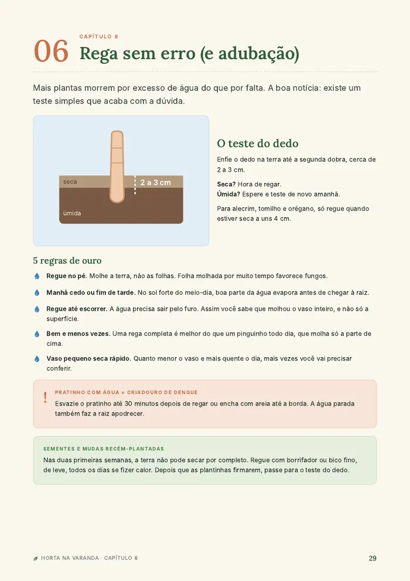
5Montagem e rega sem erro: o vaso montado em 6 passos e o teste do dedo, que acaba com a dúvida de quando regar. -
6Pragas e problemas: o que fazer com folha amarela, pulgão, lagarta e fungo, com receitas caseiras. -
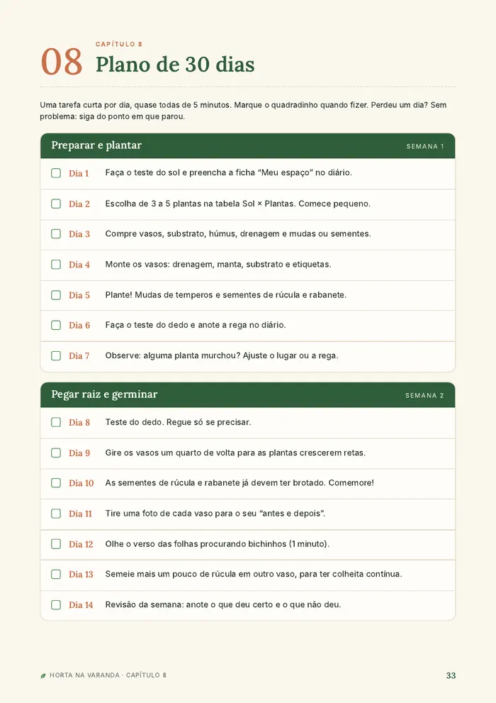
7Plano de 30 dias: uma tarefa por dia, com quadradinho para marcar. -
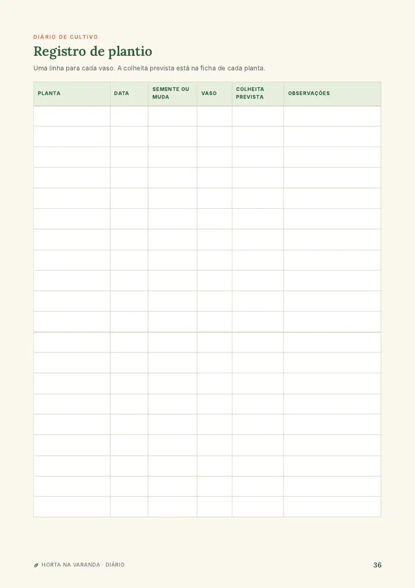
8Diário de cultivo para imprimir: registro de plantio, controle do mês, colheitas e fotos de antes e depois.
15 plantas que dão certo em vaso
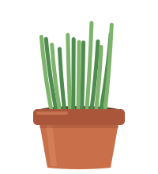
Cebolinha- Salsinha
- Manjericão
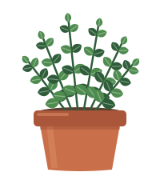
Hortelã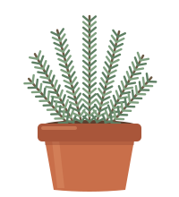
Alecrim- Orégano
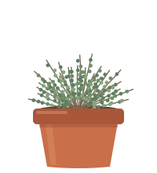
Tomilho- Coentro
- Alface
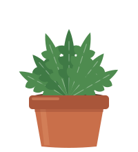
Rúcula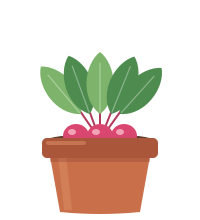
Rabanete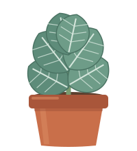
Couve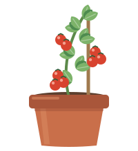
Tomate-cereja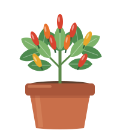
Pimenta- Morango
Temperos, folhas e até frutinhas, cada uma com sua ficha completa e nível de dificuldade.
Para quem é
É para você se…
- mora em apartamento e tem uma varanda, janela ou área de serviço
- nunca plantou nada, ou já tentou e as plantas morreram
- quer temperos frescos sem depender da feira
- gosta de instruções claras, passo a passo
Não é para você se…
- procura um curso de agricultura ou de horta comercial
- quer uma horta grande no quintal ou no sítio
- não tem nenhum tempo: o plano pede uns 5 minutos por dia
Como funciona
Você compra pelo checkout seguro da Kiwify (Pix, cartão ou boleto).
Recebe o acesso por e-mail na hora e baixa o PDF.
Começa hoje: faça o teste do sol e siga o plano de 30 dias.
Horta na Varanda: guia completo em PDF
- Guia ilustrado com 40 páginas
- 15 fichas de plantas
- Calendário de plantio por região
- Plano de 30 dias
- Diário de cultivo para imprimir
- Acesso imediato e para sempre
R$ 27pagamento único
Pix, cartão ou boleto · Pagamento seguro pela Kiwify
Garantia incondicional de 7 dias
Se nos primeiros 7 dias você achar que o guia não é para você, é só pedir o reembolso pela própria Kiwify. Você recebe 100% do valor de volta, sem perguntas.
Perguntas frequentes
Como recebo o guia?
Logo após a confirmação do pagamento, a Kiwify envia o acesso para o seu e-mail. Pix e cartão são liberados na hora; boleto, em até 2 dias úteis.
Preciso ter experiência?
Não. O guia foi feito para quem nunca plantou e explica tudo do zero, com linguagem simples.
Minha varanda tem pouco sol. Funciona?
O primeiro capítulo mostra como medir o sol do seu espaço, e a tabela Sol × Plantas indica o que dá certo com sol pleno, sol médio ou meia-sombra.
Quanto vou gastar para montar a horta?
Dá para começar com poucos vasos, substrato e algumas mudas. O guia traz a lista de compras e mostra como reaproveitar baldes e potes para gastar menos.
Serve para qualquer região do Brasil?
Sim. O calendário de plantio é dividido por região: Sul, Sudeste e Centro-Oeste, Norte e Nordeste.
Consigo ler no celular?
Sim. O PDF pode ser lido no celular, no tablet ou no computador, e também impresso.
E se eu não gostar?
Você tem 7 dias de garantia para pedir o reembolso total pela Kiwify.
Daqui a 30 dias, você pode estar colhendo o seu próprio tempero
Pagamento seguro pela Kiwify · Acesso imediato por e-mail